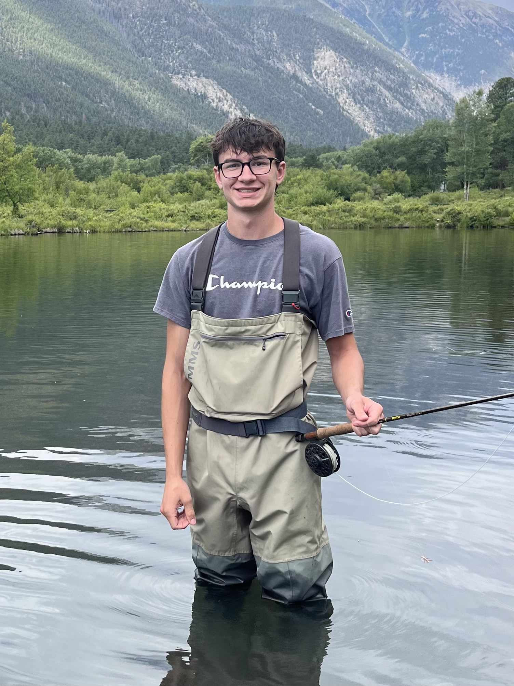

About Me
Hello, my name is Chase Pellegrom, and I am a mechanical engineering student at the Colorado School of Mines. I will receive my Bachelor of Science in Mechanical Engineering, with a minor in Materials Science, in Spring 2028. After graduation, I hope to pursue a dual master’s degree in Materials Science and Physical Chemistry + Chemical Physics. I am involved in an undergraduate research project focused on the corrosion of reinforced concrete in coastal environments, and I have completed other projects in sustainable design and manufacturing processes. Outside of academics, I enjoy the outdoors, traveling, and spending time with friends and family. I am passionate about learning and applying my skills to solve real-world problems, and I am excited to share my work and experiences through this website.

Project/Research Highlights
*Click on the Projects and Research tabs above to learn more
Durability of Past, Present, and Future Concrete Formulations in Coastal Environments
Conducting electrochemical testing and analyzing corrosion behavior of reinforced concrete specimens using laboratory instrumentation.
Analysis of CO2 Levels Over Time
Used fast Fourier transform (FFT) to analyze trends in CO2 levels over time and applied a low-pass filter to remove high-frequency noise from the data.
Sustainable Packaging Solution
Built a custom clamshell-style box with an elastic, biodegradable TPU sheet to securely hold a product while minimizing material use.
Resume
Contact
Email: cmpellegrom@outlook.com
LinkedIn: linkedin.com/in/chase-pellegrom
Due to privacy concerns, I have chosen not to include my phone number or main email on this website or on the online resume. Please reach out for additional methods of contact.